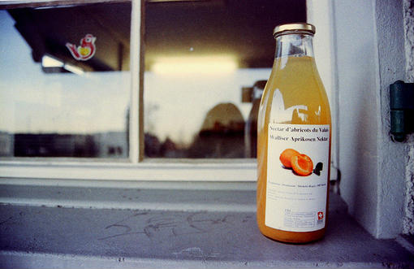

- 跨过星河迈过月亮成为更好的自己
我坚持，无论有多绝望，无论有多悲哀，每天早上起来，都要对自己说，这个世界很好，很强大。这句话，不是在满怀希望时说得，而是在绝望，无助，很痛苦，迷茫的时候，说这句话。要坚信，你是一个勇敢的人。
- 电话以外的宁静
电话很久没有响过了，我的QQ也很久没有在线了，消失了很多天，刚刚结识的朋友因为我身上又起了红疹，每天都发来消息询问我的情况，我做到了这么多天来的沉默，我相信，没有网络，我还是可以继续我自己的生活
- 遇见一个未知的你
听着那熟悉的歌曲看着那一张张可爱的图片.-读着我们共同欣赏的诗……也许我们曾经相遇,看着你远去的背影 ,沿着你来的方向 ,回忆时间穿梭于幸福的点点滴滴....
- 世上再美的风景 都不及回家的那段路
遍山遍野去找你，但凡是山上有月色流注到的地方我都到了，不见你底踪迹.
- 我的肩上是风 风上是闪烁的星群！
“你为什么要那么努力?”“想去的地方很远，想要的东西很贵，喜欢的人很优秀，父亲的白发，周围人的嘲笑，以及，天生傲骨。”
最后的午餐
昨晚上做梦了，我本不想记下，可是又怕这种似乎有点真实的感觉就这样溜走，枕头湿了...我也记不得我是在梦中哭过还是...... ­在一个小餐馆，男孩叫了一份鱼香茄子、麻婆...
- 目录2
- 2019-07-15
- 81已阅读
- 7
Just One Last Dance
《Just One Last Dance 》是一个朋友介绍给我听的，当时一听就喜欢上它了，直到现在，就像《因为是女子》一样，我空间的主打歌还挺多的，唯独这两首让我舍不得换掉......如...
- 目录2
- 2019-07-15
- 65已阅读
- 6